AI 划重点
一键标出核心观点、定义、数据和结论，按类型着色，每处附一句说明。不满意，按一次 ⌘Z 全部撤销。
- 观点
- 定义
- 数据
- 结论
- 方法
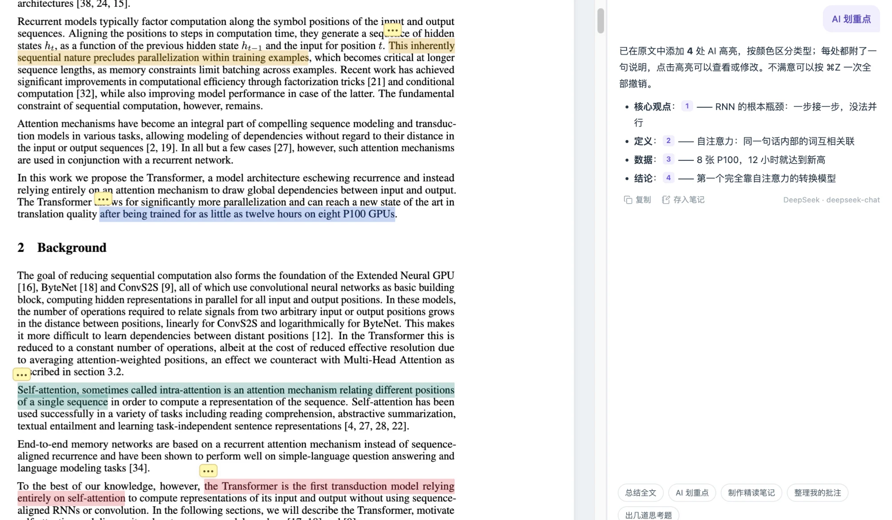
页间是 Mac 和 Windows 上的本地阅读器。打开文件夹就能读 HTML 与 PDF，随手高亮、批注、手绘、改源码。现在还有 AI 陪你读：它引用原文回答问题，没读懂的地方，请页老师在白板上从头讲一遍。
页间目前提供 Mac 和 Windows 版，可以先收藏本页，在电脑上下载。
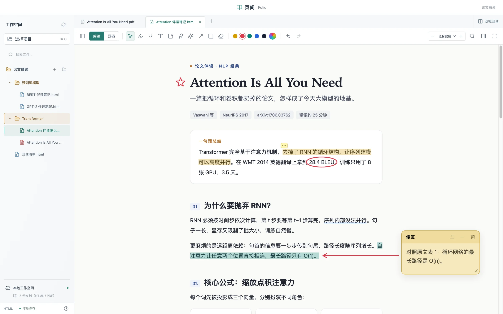
AI 陪读
在读的地方直接问。回答里的每个编号都对应原文的一句话，点一下就跳过去；原文里找不到的引用会被划掉，提醒你那句可能是模型自己改写的。
一键标出核心观点、定义、数据和结论，按类型着色，每处附一句说明。不满意，按一次 ⌘Z 全部撤销。

选中一句，浮动工具条上就有。英文论文直接译成中文，结果可以存成高亮笔记，或者转到助手里接着追问。
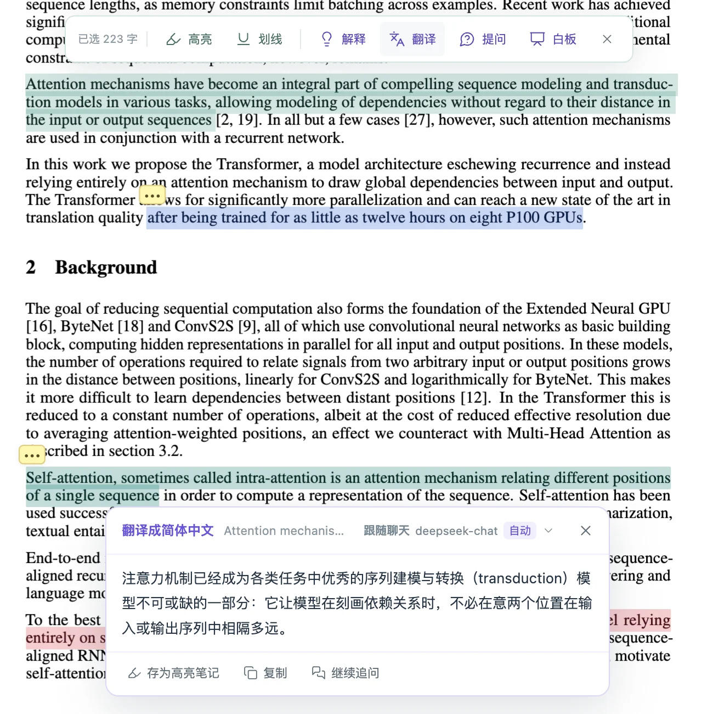
回答带编号引用，点一下回到原文。选中一段再问，就只针对这一段；双栏阅读时两篇一起参考。回答能一键存进文档笔记。
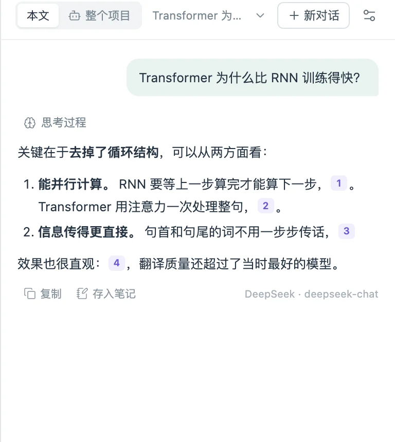
为一篇论文写一份伴读 HTML：阅读地图、前置概念、逐节导读、公式拆解、原文金句和思考题。它保存在原文旁边、并排打开，笔记里的页码一点，PDF 就翻过去。
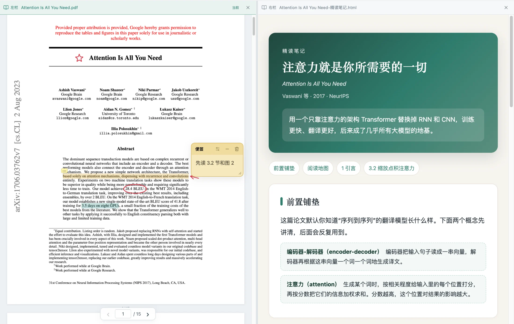
说一句想怎么改，先看改动对比和改完的预览，确认了才写进文件。改之前的版本照常自动备份。
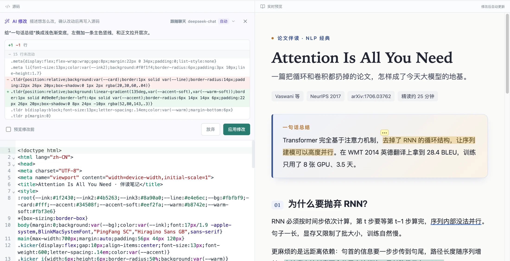
切到「整个项目」，AI 自己读、自己搜项目里的文档，帮你加高亮、写笔记、改或新建 HTML，还能替你找论文。每一步都先给你看，点「应用」才执行；它删不了文件，也碰不到项目以外的内容。
在「整个项目」里说一句想读哪个方向，AI 去 OpenAlex 和 arXiv 里查，告诉你每篇的作者、年份、出处，哪些有公开的 PDF。
白板讲解 · 新
选中一段文字，或者框选公式、图表，页老师边说边写边画：字幕是他说的话，板书、公式、示意图一笔一笔出现，圈着、指着讲给你听。
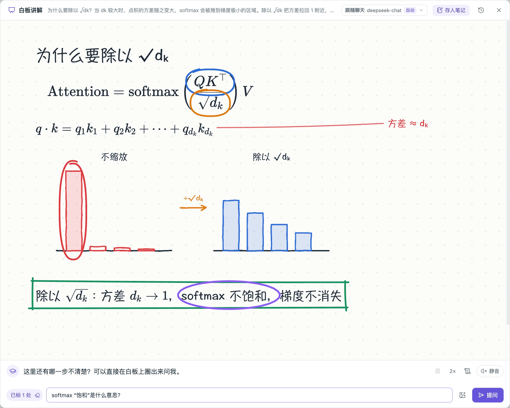
只看字幕和板书，安静地跟着读。空格暂停，1× / 1.5× / 2× 倍速，随时回看字幕记录。
用系统的中文语音，或通义百炼、豆包、MiniMax 的真人声音边说边画，你打字提问。讲到一半想问，圈出来就行。
像打电话一样直接开口，他讲的时候你一说话就停下来听。在这台电脑上识别时不上传录音。
接入 AI
页间不卖会员，也不经手你的钱。在 AI 设置里填上从服务商官网申请的 API Key，就能用；也可以用 ChatGPT 账号或 Kimi 会员，或者干脆在本机跑模型。
按用量付费给服务商。填好 Key 可以获取模型列表、测试连接，添加几个都行，在输入框下面随时切换。
选 Codex 用 ChatGPT 套餐里的额度，选 Kimi Code 用 Kimi 会员里的额度，都不需要 API Key，不另外付费。通过这台电脑上的 Codex 或 Kimi Code 登录。
模型跑在你自己的电脑上，文档不会离开这台电脑，断网也能问。
界面主题
六套只换配色，四套连形状和字体一起换。打开「跟随系统」，白天和夜里各用一套。主题只改界面，正文保持原样。
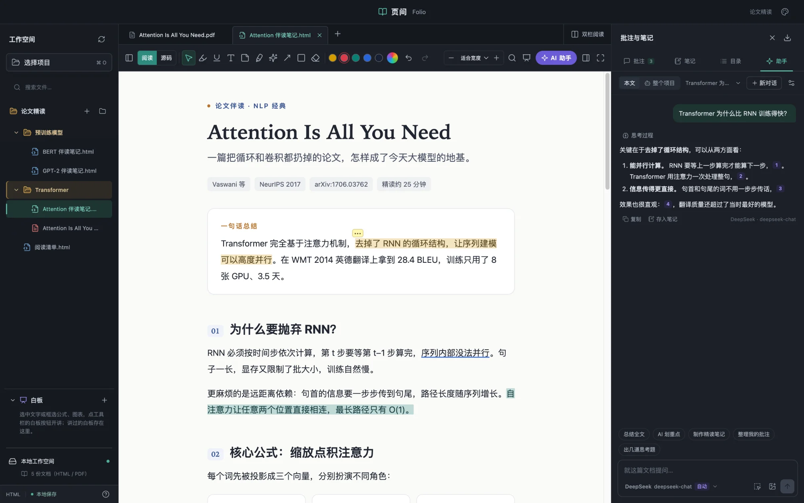
夜读 · 深蓝灰的夜间界面，青绿点缀。
阅读与批注
打开文件夹，HTML 和 PDF 按目录列好，不用导入也不用上传。网页按原样排版，图片、样式、公式都在；想法贴在它发生的地方。
选中一句就是高亮，点一下写下你的理解。便签贴在页边，箭头连起两段文字，画笔圈出重点。HTML 和 PDF 用同一套工具，所有标记汇总在右侧批注栏，点一下就回到原处。
五种常用色，也能自由取色。每一步都能 ⌘Z 撤销。
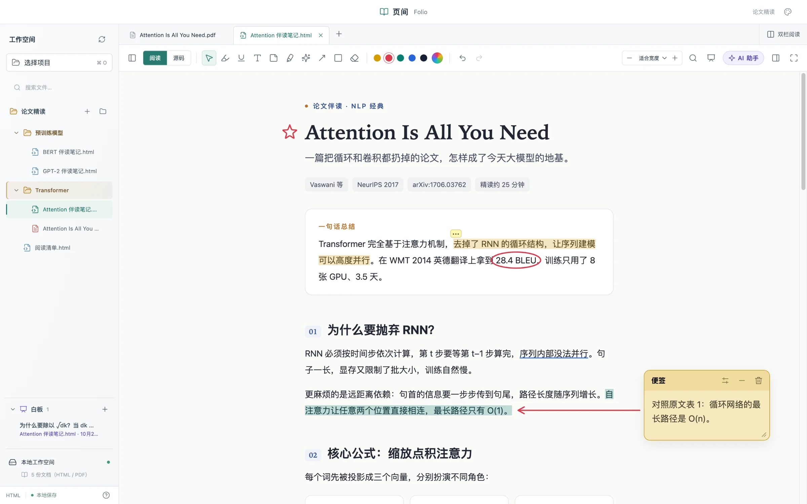
从左侧把另一篇拖进阅读区，就组成双栏。HTML 与 PDF 任意搭配，比如一边是论文原文、一边是你的笔记；打开同步滚动，两篇一起往下走。
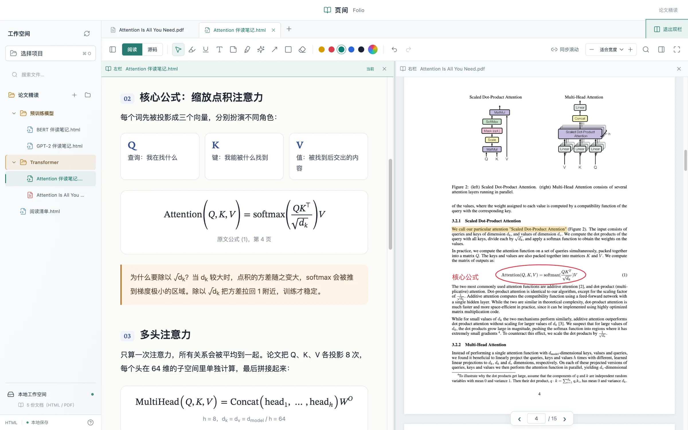
点开 PDF 就读，不用导入。批注按页记录位置，缩放、换布局、重启之后都跟着原页走。
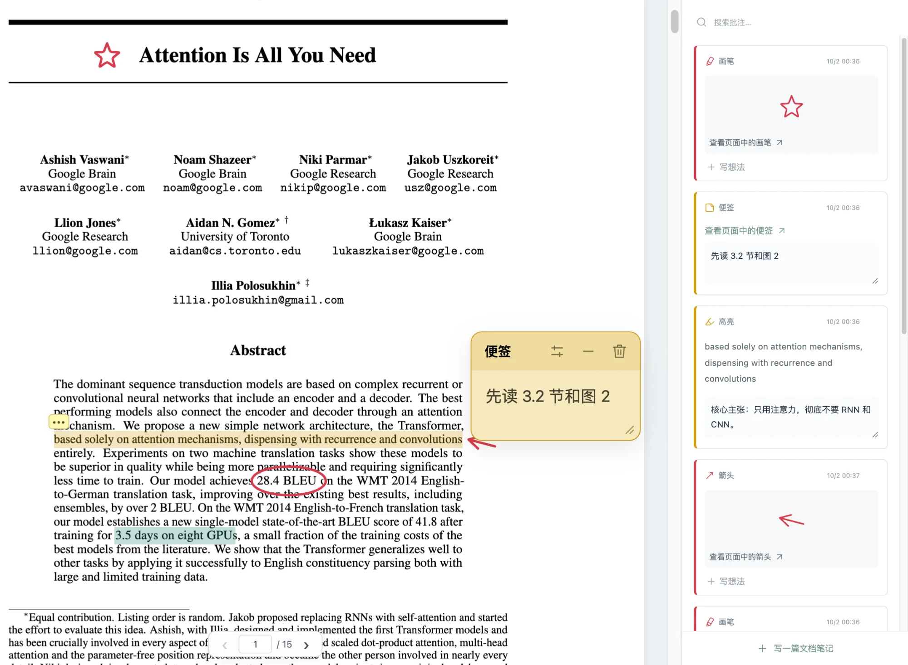
发现错字、想调样式？切到源码，左边编辑，右边实时预览，改完自动写回文件，批注也不会丢。
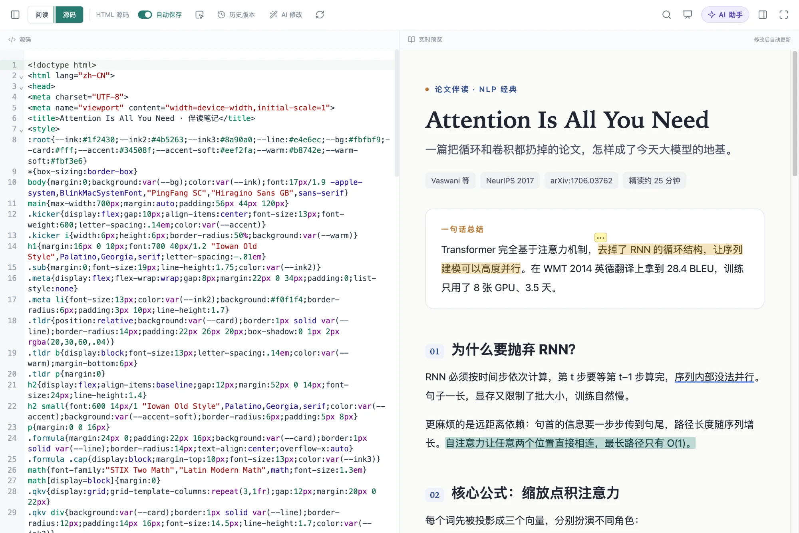
按 ⌘⇧F 进入全屏，标签页、文件树和批注栏都收起来。鼠标移到顶部，工具随时出现；落笔之后，它自己再藏好。
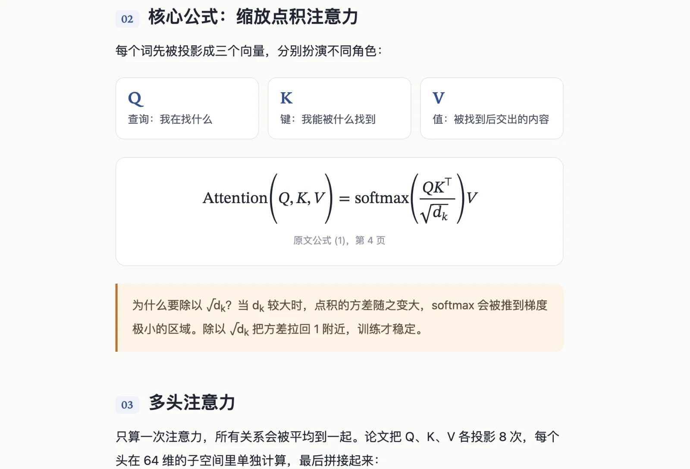
⌘ + 滚轮或双指捏合，25% 到 400%，指针下的文字不跑位。
按 Tab 在最近用过的两个工具间切换，比如高亮和便签。
画错一笔，按住 E 擦掉，松开继续画。可以局部擦，也可以整笔擦。
HTML 按标题生成目录，PDF 读取书签。长文一键跳转。
把高亮摘录和笔记导出成 Markdown，放进你自己的笔记系统。
拖入文件或文件夹，也可以 ⌘V 粘贴。导入是复制，原文件保留。
数据
页间不上传你的文档。批注、笔记、和 AI 的对话、讲过的白板，都保存在文档旁边一个隐藏的
.html-reader 文件夹里。备份、迁移、换电脑，把整个文件夹带走就行。
论文精读/ ├─ Attention Is All You Need.pdf ├─ Attention 伴读笔记.html └─ .html-reader/ ← 都在这里 ├─ workspace.json ├─ documents/ 高亮、便签、笔迹 ├─ ai/ 和 AI 的对话 ├─ boards/ 讲过的白板 └─ backups/ 源码的历史版本
免费下载。打开文件夹，就能开始。
macOS
页间目前使用本地签名，还没有经过 Apple 公证，所以 macOS 会拦一下。先尝试打开一次，然后到 系统设置 → 隐私与安全性，找到页间对应的提示，点 仍要打开。只需要做一次。
请只对从本站下载的安装包这样操作。如果系统提示文件已损坏，请重新下载。 Apple 官方说明
Windows
页间还没有购买代码签名证书，所以 Windows SmartScreen 会拦一下。点 更多信息，再点 仍要运行。只在安装时需要一次。
请只对从本站下载的安装包这样操作。如果杀毒软件报毒或文件无法运行，请重新下载。
已装 0.8.0 及更新版本的页间会自动更新。0.7.0 及更早的版本请先退出旧版，Mac 把新版拖进「应用程序」替换，Windows 直接运行新版安装程序。批注存在你的文件夹里，不受影响。
常见问题
页间免费下载、免费使用。AI 用的是你自己的服务：云端服务按用量付给服务商，页间不经手；用 ChatGPT 账号走的是套餐里的 Codex 额度，用 Kimi 会员走的是 Kimi Code 额度；本机运行的模型不花钱。不配置 AI，其他功能照常使用。
本地的 HTML 和 PDF。HTML 优先支持 UTF-8 编码的静态网页，包括常见脚本、相对路径的图片与样式，以及数学公式；需要登录的网站、复杂的网页应用暂不支持。有文字层的 PDF 可以选字、高亮、写笔记；扫描版可以画线、贴便签，暂时不能选字。
不会。页间本身不上传任何内容，也不需要账号。只有当你的 HTML 里本来就引用了网上的字体、图片或脚本时，这些资源会像在浏览器里一样从对应网站加载。
使用 AI 时，相关的文字会发送给你在「AI 设置」里选的服务商，第一次使用某个服务前会先问你是否同意；API Key 只保存在你的电脑上。用本机运行的模型（Ollama、LM Studio）时，文档不会离开电脑。
默认不会。macOS 上用这台电脑的中文语音时，语音合成和识别都在本机完成；Windows 上默认用通义实验室的 SenseVoice 模型在本机识别，第一次语音对话时下载约 240MB 的模型。选用 ChatGPT 的声音时，语音会通过 Codex 发给 ChatGPT，用的是 Codex 账号的额度；在 Windows 上改由通义百炼或豆包语音识别时，录音会发给对应的服务商，用你自己的 Key 计费。
不会改动。批注保存在文档所在文件夹的隐藏目录 .html-reader 中，原 HTML 与 PDF 保持原样。备份或换电脑时，连同这个隐藏目录一起复制即可。
用 MathML 写的公式离线就能显示；如果依赖 MathJax、KaTeX 这类在线脚本，需要联网加载。PDF 里的公式按原样显示，AI 回答里的公式由页间直接排版。
支持 Windows 10 和 11（64 位）。Mac 版目前只提供 Apple 芯片（M 系列）版本，需要 macOS 12 或更高，Intel 芯片的 Mac 暂不支持。可以在「关于本机」里查看你的 Mac 用的是哪种芯片。
Mac 提示“无法验证开发者”：先尝试打开一次，再到「系统设置 → 隐私与安全性」点「仍要打开」。Windows 提示“Windows 已保护你的电脑”：点「更多信息」，再点「仍要运行」。原因和注意事项见 Mac 安装说明和Windows 安装说明。
页间会自动更新：新版本在后台下载好后提示重启，选「稍后」则下次退出时自动安装。Mac 版要放在「应用程序」文件夹里才能自动更新。
0.7.0 及更早的版本需要手动更新一次：退出旧版页间，Mac 把新版拖进「应用程序」并选择替换；Windows 直接运行新版安装程序，会覆盖旧版。文档和批注都在你的项目文件夹里，更新应用不会影响它们。